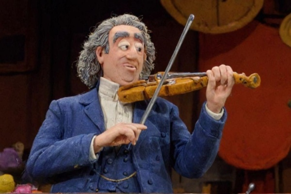

André Rieu Speelt Live Concert voor Koeien
In een hartverwarmende en tegelijkertijd hilarische gebeurtenis heeft de beroemde Nederlandse violist André Rieu een speciaal concert gegeven voor een kudde koeien op een boerderij in Limburg. Rieu, bekend om zijn grootse en meeslepende concerten, besloot deze keer een intiem optreden te verzorgen voor zijn viervoetige fans. Tijdens een interview vertelde Rieu waarom hij dit deed. "Ik heb altijd al een speciale band gehad met dieren, en deze koeien zijn mijn trouwste publiek," zei hij glimlachend. "Elke keer als ik hier in de buurt kom, zie ik ze blij reageren op mijn muziek. Dit concert is mijn manier om hen te bedanken." Het concert vond plaats op een zonnige middag, waarbij Rieu zijn viool speelde te midden van de grazende koeien. Volgens de boer, die de koeien bezit, reageerden de dieren enthousiast op de muziek. "Ze waren echt aan het genieten," zei hij. "Je kon zien dat ze het prachtig vonden." Beelden van het concert gingen al snel viraal op social media. Onder de hashtag #RieuVoorKoeien deelden mensen video's en foto's van het optreden. "André Rieu weet echt hoe hij een publiek moet bespelen, ongeacht of ze twee of vier benen hebben," grapte een Twitter-gebruiker. Muziekliefhebbers en dierenliefhebbers reageerden positief op het nieuws. "Dit is waarom André Rieu een legende is," schreef een fan op Facebook. "Hij weet hoe hij mensen en dieren blij moet maken met zijn muziek." André Rieu zelf was blij met het resultaat. "Het was een magische ervaring," zei hij na afloop van het concert. "De koeien waren zo rustig en aandachtig. Dit is een van de mooiste optredens die ik ooit heb gegeven." Of dit concert eenmalig was of dat Rieu van plan is om meer optredens voor dieren te geven, blijft nog een vraag. Voor nu heeft hij in ieder geval de harten van zowel mensen als koeien veroverd.
Reacties